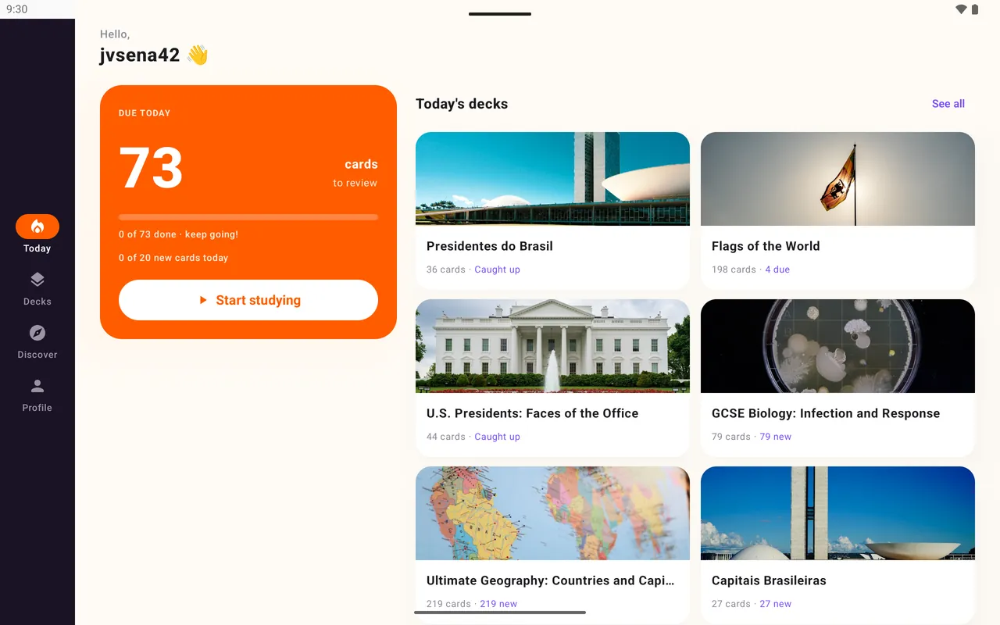
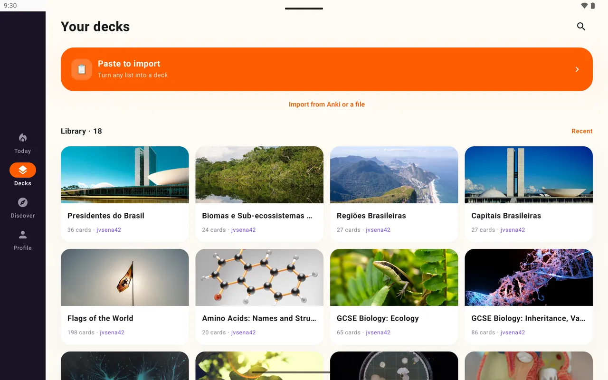

Nimm Loopky
Kostenlos ohne Werbung, Sprechübung, Teilen per Link, Stapel von der KI, und deine Anki-Stapel kommen mit.
Vergleich
Was jede am besten kann und welche zu deiner Art zu lernen passt.
Kostenlos. Keine Werbung. Quelloffen.

Kostenlos ohne Werbung, Sprechübung, Teilen per Link, Stapel von der KI, und deine Anki-Stapel kommen mit.
Wenn du auf FSRS, komplettes Offline-Lernen, Audiodateien, LaTeX oder eigene Vorlagen angewiesen bist.
Wenn deine Klasse es schon nutzt und du lieber Spiele als verteilte Wiederholung willst.
| Loopky | Anki | Quizlet | |
|---|---|---|---|
| Preis | Kostenlos, keine Werbung | Kostenlos; App auf dem iPhone kostenpflichtig | Kostenlos mit Werbung; Bezahlabo |
| Öffnet Anki-Stapel | Ja | Ja | Nein |
| Planung | Feste Intervalle, die du einstellst | FSRS oder SM-2 | Lernmodi |
| Liest Karten vor | Ja, 35 Sprachen | Mit Einrichtung | Ja |
| Aussprachekontrolle | Ja | Mit Add-ons | Keine Kernfunktion |
| Per Link teilen | Ja | Geteilte Stapel auf AnkiWeb | Ja |
| Komplett offline lernen | Nein | Ja | Eingeschränkt |
| Quelloffen | Ja | Ja | Nein |
Andere Apps ändern sich mit der Zeit. Aktuelle Preise findest du auf ihren eigenen Websites.
Exportiere jeden Stapel als .apkg und öffne ihn in Loopky. Text, Bilder und Lückentext kommen mit, und große Bildschirme bekommen zweispaltige Ansichten.

Für viele Lernende ja. Es ist einfacher, auf dem Handy kostenlos, und hat Sprechübung und Teilen eingebaut. Anki hat FSRS, komplettes Offline-Lernen, Audio und LaTeX.
Loopky ist kostenlos, ohne Werbung und ohne Bezahlstufe, und nutzt verteilte Wiederholung.
Exportiere jeden Stapel aus Anki als .apkg mit Medien und importiere ihn in Loopky. Der Lernverlauf beginnt neu.
Ein paar Minuten am Tag reichen.